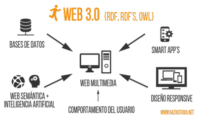
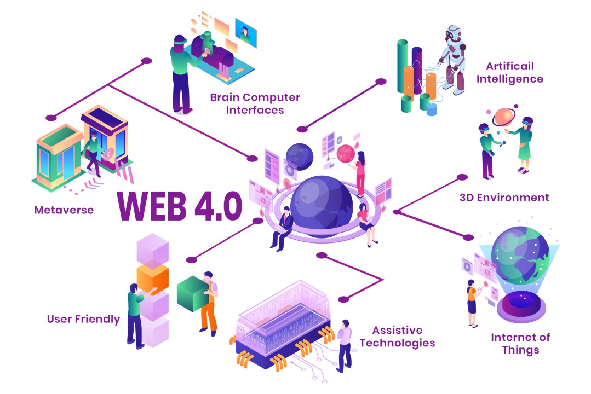

Linea del tiempo
| Hitos | Hechos | Imagenes | Referencias | |
|---|---|---|---|---|
| Internet |
1969 - ARPANET: Se estableció la primera conexión de computadoras conocida como ARPANET, entre las universidades de California y Utah. 1983 - TCP / IP: ARPANET cambió el protocolo NCP, el cual fue diseñado para gestionar la comunicación entre computadoras en la red por TCP/IP. 1989 - OSI: Integración de los protocolos OSI en la arquitectura de Internet, facilitando el uso de distintos protocolos de comunicación. |
 |
S.F. (26 de febrero de 2024). Historia de internet. Obtenido de https://www.fib.upc.edu/retro-informatica/historia/internet.html Latorre Ariño M. (28 de marzo del 2018). HISTORIA DE LA WEB, 1.0, 2.0, 3.0 Y 4.0. Obtenido de: https://marinolatorre.umch.edu.pe/historia-de-la-web-1-0-2-0-3-0-y-4-0/ |
|
| Web 1.0 |
1990 - MILNET / INTERNET: ARPANET se desmantela y aparecen:
1991 - WWW: Tim Berners Lee crea la WORLD WIDE WEB, más conocida como WWW, además, propuso un nuevo sistema de hipertexto para compartir documentos.
1992 - TABLE BASE WEB: Permitían organizar el texto en columnas y mantener la información separada a lo largo de la página. Proporcionaban una mayor posibilidad de diseño aunque su manejo era bastante complejo. 1995 - HTML 2.0: HTML 2.0 fue publicado como una especificación por el IETF (Internet Engineering Task Force). HTML 2.0 introdujo el soporte básico para formularios web, permitiendo a los usuarios enviar datos a través de la web. 1996 - CSS: El Consorcio W3C introdujo Cascading Style Sheets (CSS) como una solución para mejorar la presentación y el diseño de las páginas web. CSS es un lenguaje de estilo utilizado para describir la apariencia visual y el formato de un documento HTML. 1997 - HTML 4.0: HTML 4.0 Fue lanzado como una especificación oficial por el W3C en diciembre de 1997. Esta versión trajo consigo mejoras significativas, incluyendo la introducción de hojas de estilo (CSS) como un componente separado para el diseño y formato de las páginas web. 1998 - GOOGLE: Google se funda y se convierte en un motor de búsqueda clave. Google se lanzó como un motor de búsqueda en línea que se destacaba por su enfoque en la relevancia y calidad de los resultados de búsqueda. |
 |
||
| Web 2.0 |
2001 - WIKIPEDIA: Wikipedia fue lanzada como una enciclopedia en línea de acceso gratuito y colaborativo. Fue fundada por Jimmy Wales y Larry Sanger con el objetivo de crear una plataforma donde cualquier persona pudiera contribuir y editar contenidos. 2004 - FACEBOOK: Mark Zuckerberg y sus compañeros de habitación de la Universidad de Harvard lanzaron la plataforma social conocida como Facebook. Permitía a los usuarios crear perfiles, compartir fotos, actualizar su estado y conectarse con amigos. 2005 - YOUTUBE: YouTube fue lanzado en febrero de 2005 por tres antiguos empleados de PayPal: Steve Chen, Chad Hurley y Jawed Karim. La plataforma permitía a los usuarios cargar, ver y compartir videos. 2007 - IPHONE: Apple lanza el iPhone, marcando el inicio de la era de los teléfonos inteligentes y el acceso móvil a Internet. |
  |
||
| Web 3.0 |
2012 - SCHEMA: Schema.org se lanza como una colaboración entre Google, Microsoft, Yahoo y Yandex para crear un vocabulario común para la marcación de datos estructurados en páginas web. 2013 - TWITCH: Twitch se centró en la transmisión en vivo de contenido relacionado con videojuegos y eventos de eSports. 2014 - SOLID: Solid, un proyecto liderado por Tim Berners Lee en el MIT, se anuncia como una plataforma para empoderar a los usuarios con el control de sus propios datos en la web. 2014 - HTML5: HTML5 trajo consigo una serie de mejoras y características nuevas en comparación con sus predecesores, incluyendo soporte integrado para contenido multimedia, gráficos vectoriales, mejoras en la accesibilidad, y una mayor capacidad para crear aplicaciones web interactivas. |
 |   |
|
| Web 4.0 |
2015 - WHATSAPP WEB: Esta función permitió a los usuarios de WhatsApp acceder a sus mensajes y conversaciones a través de una interfaz web, lo que facilitó la comunicación desde computadoras de escritorio. 2015 - ETHEREUM: La Fundación Ethereum lanza la red Ethereum, una plataforma blockchain que permite la creación de contratos inteligentes, proporcionando un entorno descentralizado para aplicaciones. |
 | ||